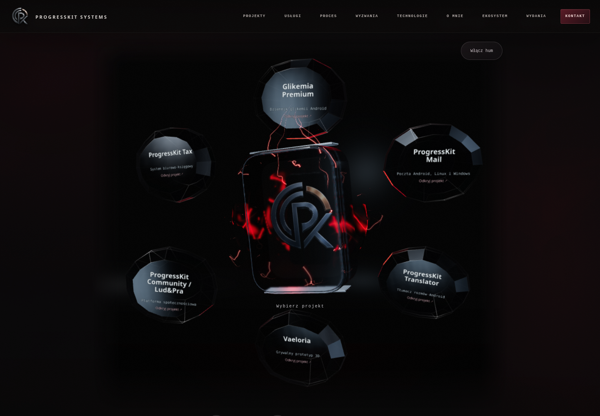
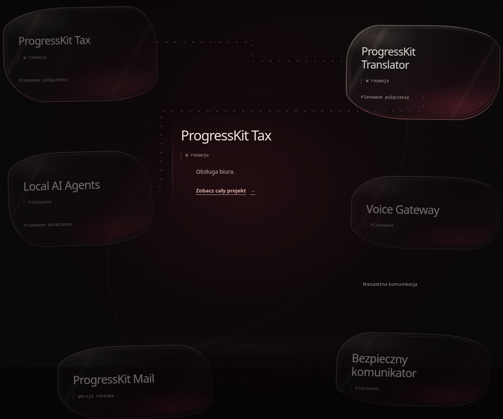
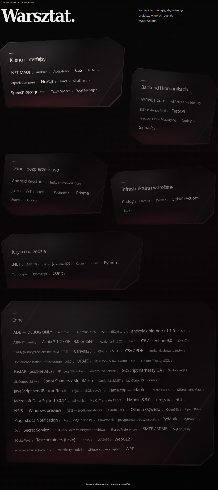
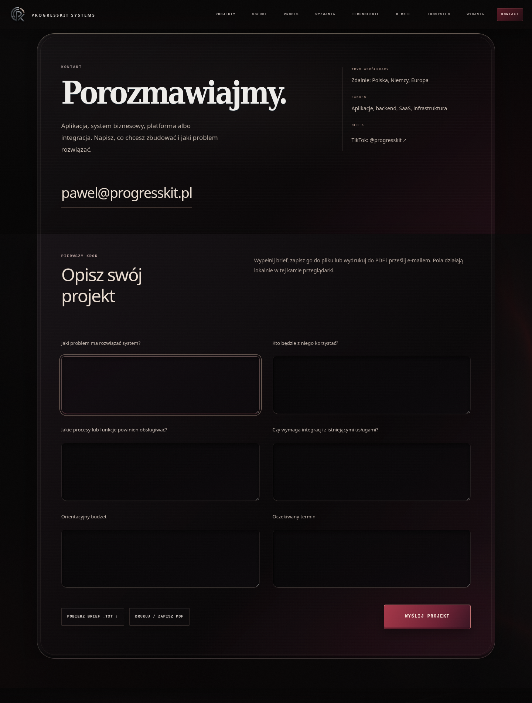
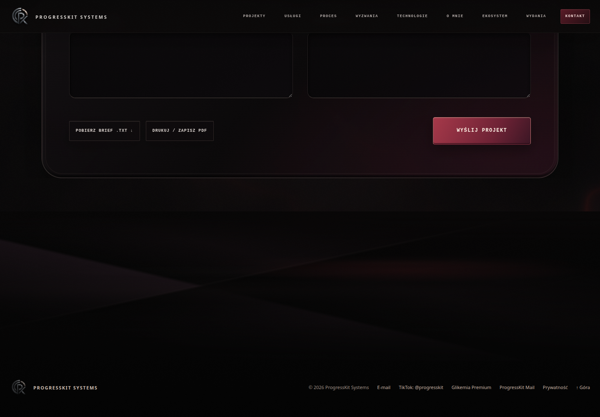

OWNER VISUAL APPROVAL: OPEN · TYLKO LOKALNY PODGLĄD
Zachowana zatwierdzona baza Hero / Services / Core. Dopracowane kryształy, Process i druga połowa strony. Poniżej pięć wskazanych zrzutów oraz pełne nagrania od Hero do Footer.





Rzeczywiste materiały z lokalnej przeglądarki, bez audio. Mobile oznacza emulację viewportu i dotyku. Treści, katalog, statusy i analytics zachowane. Bez commita, pushu i publikacji.